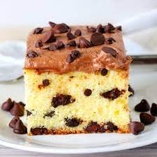
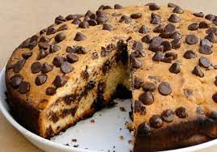

Chocolate Sponge cake

___________________________________________
INGREDIENTS NEEDED
- 1 1/2 cups (210g) all-purpose flour
- 1 1/2 teaspoons baking powder
- 1/4 teaspoon salt, optional
- 1/4 cup (55g) unsalted butter, softened to room temperature
- 1/4 cup (60 ml) canola or vegetable oil
- 1 cup (200g) granulated sugar
- 2 large eggs
- 1 1/2 teaspoons pure vanilla extract
- 3/4 cup (180 ml) buttermilk, sour cream or heavy cream
- 1 cup (170g) chocolate chips
___________________________________________
INSTRUCTIONS
- Preheat oven to 350°F/180°C. Grease a 9×5-inch loaf pan. Set aside.
- In a medium bowl sift together flour, baking powder, and salt. Set aside
- (In this step it’s possible to whisk the ingredients in the same order with a hand whisk instead of using a mixer. Mixing the ingredient slowly and with the paddle attachment in the mixer gives the cake a more ‘cakey’, light texture. In this case there's no need to mix for a few minutes, mix only until the ingredients are combined.) In a medium bowl using a mixer fitted with the paddle attachment, beat butter, oil, and sugar on medium speed for about 4 minutes, until light and fluffy. Scrape down the sides and bottom of the bowl as necessary. Add eggs and vanilla extract and beat until combined. On low speed, beat in flour mixture in 3 additions, alternating with the buttermilk (or sour cream/heavy cream) in 2 additions, starting and ending with the flour. Mix in chocolate chips. Once all is added, be careful not to overmix the batter
- Scrape batter into prepared pan and smooth the top. Bake for 45-60 minutes or until a toothpick inserted into the center of the cake comes out clean. If the top browns too quickly while baking, cover pan loosely with aluminum foil. Allow cake to cool completely on a wire rack.
- Store cake at room temperature in an airtight container for up to 2 days or refrigerate for up to 5 days. Serve at room temperature.
___________________________________________
